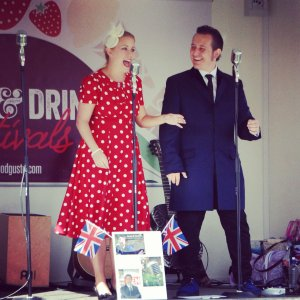

News / Reviews
| News from the world of 'Andy B Goode'. |
SUMMER SHOWREEL 2016 |
Snippets of many of my songs can be seen in my 'Summer Showreel 2016', which was recorded live at St Pauls Church Dosthill Summer Vintage Fete.
XMAS EVENTS |
Xmas Party: I currently have space for some more Christmas gigs.... so book soon if you want your party to swing vintage style.
SPECIAL OFFERS |
Special Offer: Discounted gig pricing is currently available for 2016.
Free Gigs: This year I am giving a few free gigs to local worthy causes (Hospices, Charities, etc) so inquire soon if you represent a organisation that may enjoy Vintage Rock n Roll and Crooning.
SWADLINCOTE INTERNATIONAL FOOD AND DRINK FESTIVAL |
Saturday 15th October 2016 - 11am
Swadlincote International Food and Drink Festival. Outside the lovely 'Curly Magpie' vintage shop. I will be performing at 11am.
Prepare yourself for Energetic 1950s Rock n Roll and tasty food from all over the world.
It's gonna be great.
CARE HOMES |
It's great singing at care homes. See their faces light up as they recognise a favourite song from their youth. You just watch them sing along enjoying those classics and know all that practicing is worthwhile.
BIRTHDAY PARTIES |
Birthday Parties: I have done a few birthday parties over the summer, which were great fun. People danced the night away. Some even sang along.
|  | FOOD GUSTO FOOD FAIR |
September 2016 Food Gusto Fayre (Tamworth Castle, Pleasure Grounds). A Food Festival in Tamworth. I performed with 'The Jays' multiple times during the day.
What a lovely sunny day it was so the beautiful 1940s Andrews Sisters style Vintage Harmonies and Energetic 1950s Rock n Roll really added to the upbeat atmosphere. The food was so really varied and most tasty. So many spicy flavours. One for next years diary... I need some of those amazing meat pies and samosas.
NORTON JUXTA TWYCROSS SUMMER VILLAGE FETE |
Norton Juxta Twycross Summer Village Fete (June): I provided live music beside the swimming pool as people had a cream tea. This included: barbecue, cream teas, coconut shy, skittles competition, vintage steam engine, delicious home made ice cream, stalls and the annual dog show.
I performed "Teenager in Love" live on the top local radio station TCR FM (www.tcrfm.co.uk).
WARWICKSHIRE AND ANTIQUE FAYRE |
Warwickshire and Antique Fayre (July): This was a great local vintage fayre in Poleworth. Loads of stalls with Dresses and other collectables. I sang for a couple of hours to add a retro touch. I even bought a few xmas presents!
DOSTHILL CHURCH VINTAGE FETE |
St. Pauls Dosthill Summer Vintage Fete 2016: A classic British summer Fete in Dosthill at the pretty Church. Loads of stalls, a barbeque and yummy cakes were available. Many friends came and I sang lots of new songs (while avoiding the light showers). People joined in on some songs, which was lovely.
Contact me
- Phone: 07415 338859
- email: Andy@AndyBGoode.com
- Facebook: AndyBGoode
- Instagram: andybgoodevocalist
- YouTube: Andy B Goode
- Twitter: AndyBGoode
- website: v2.1.7